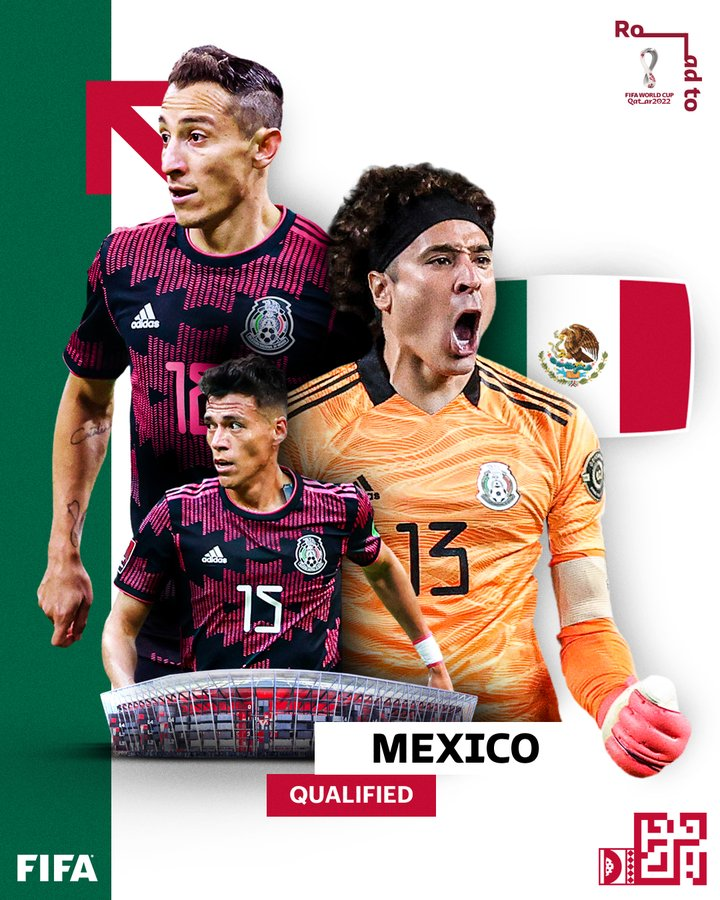

Meilleur joueur
GUILLERMO OCHOA
Voilà sept éditions de rang que le Mexique se fait sortir de la Coupe du Monde de la FIFA™ au stade des huitièmes de finale. Hirving Lozano et ses partenaires sont déterminés à forcer leur destin lors de Qatar 2022.
L'équipe du Mexique de football, créée en 1923, est l'équipe nationale représentant le Mexique en football masculin. Cette équipe est dirigée par la Fédération du Mexique, qui est affiliée à la FIFA depuis 1929 et est un des membres fondateurs de la CONCACAF en 1961.
L’histoire du Mexique dans la plus prestigieuse des compétitions semble n’être qu’un éternel recommencement. La sélection aztèque connaît le même sort à chaque édition depuis 1994, une triste élimination en huitièmes de finale malgré de bonnes performances en phase de groupes. Ce scénario s’est répété lors des sept dernières campagnes mondiales de la Verde, qui ne vise désormais rien d’autre que les quarts de finale.
Lors de Russie 2018, les Mexicains étaient pourtant bien partis pour conjurer le sort. Tombeurs de l’Allemagne tenante du titre pour leur première sortie, ils ont enchaîné avec une victoire 2-1 sur la République de Corée. Toutefois, la lourde défaite contre la Suède pour le compte de la dernière journée a privé le Mexique de la première place du groupe.
Face au Brésil, les hommes de Juan Carlos Osorio n’ont rien pu faire pour éviter l’élimination (2-0) en huitièmes de finale, tandis que les Suédois se sont imposés 1-0 contre la Suisse pour franchir ce cap tant espéré. La sélection aztèque n’est parvenue à se hisser parmi les huit meilleures nations mondiales qu’en tant que pays hôte, en 1970 et 1986. Alors en attendant l’édition 2026 qui se déroulera en partie sur ses terres, le Mexique compte bien mettre un terme à cette série noire dès cette année.
GUILLERMO OCHOA
Francisco Guillermo Ochoa Magaña, plus connu sous le nom de Guillermo Ochoa ou Memo Ochoa, né le 13 juillet 1985 à Guadalajara, est un footballeur international mexicain évoluant au poste de gardien de but au Club América.
Guillermo Ochoa débute à 18 ans dans les cages de l'America. C'est l'ancien sélectionneur néerlandais Leo Beenhakker qui est le premier à lui faire confiance, après la blessure du portier titulaire, Adolfo Ríos1.

"J’aimerais souligner l’attitude, l'engagement défensif collectif et la volonté de se battre sur chaque ballon qu’a fait le Mexique . C’est la base d’une équipe compétitive. »

« Je pense que la Mexique est une incroyable équipe »
« Jouer face à des milliers de supporters mexicains ne nous fait pas peur.
Il y’a d’autres choix sans doutes possibles, le Mexique a un objectif, clair pour espérer continuer la compétition. Nous aussi … voilà donc c’est dur pour qu’il y’ait deux équipes heureuses à la fin du match. »